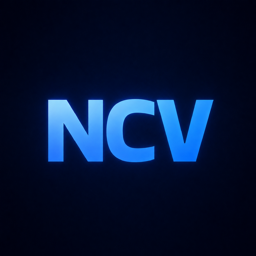

NCVتطبيق يساعدك تبني سيرة ذاتية احترافية متوافقة مع أنظمة ATS بالذكاء الاصطناعي، وتلقى الوظائف المناسبة لك في السعودية والخليج، وتتدرب على المقابلات، وتقدّم على الوظائف بسهولة.
حمّل NCV من App Storeسيرة احترافية بالعربي والإنجليزي، مع تحليل ATS وتحسين بالذكاء الاصطناعي.
آلاف الجهات في السعودية مصنّفة حسب القطاع، وإرسال سيرتك لها بسهولة.
مقابلة صوتية مباشرة مع محاور ذكي وتقرير على نموذج STAR (الاشتراك الأسطوري).
نبحث لك عن الوظائف المناسبة ونرسل طلبك من إيميلك بصلاحية «إرسال فقط» (الاشتراك الأسطوري).
NCV is a career app for iOS. It helps you build an ATS-ready CV in Arabic and English with AI, find jobs and employers in Saudi Arabia and the Gulf, practise live voice interviews with an AI interviewer, and apply to jobs.
Automatic applications and Gmail: Legendary subscribers can connect their Gmail account so NCV sends job application emails on their behalf, from their own address, with their CV attached. NCV asks only for the Gmail "send email" permission. It cannot read, search, change or delete any email. Every email sent is shown to the user in the app, and the user can turn the feature off or disconnect Gmail at any time. See the Privacy Policy.
Contact: appncv@gmail.com · WhatsApp +966 55 899 1175